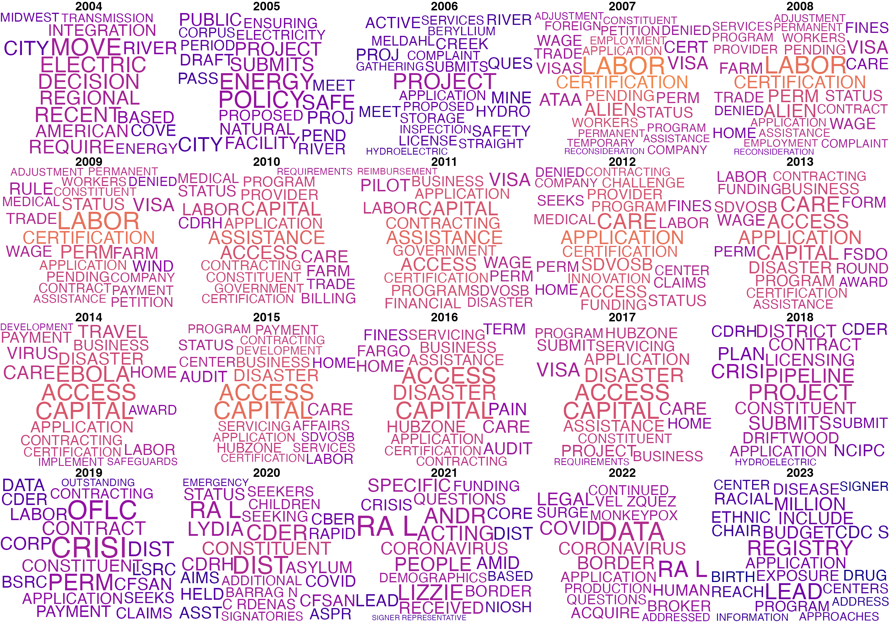
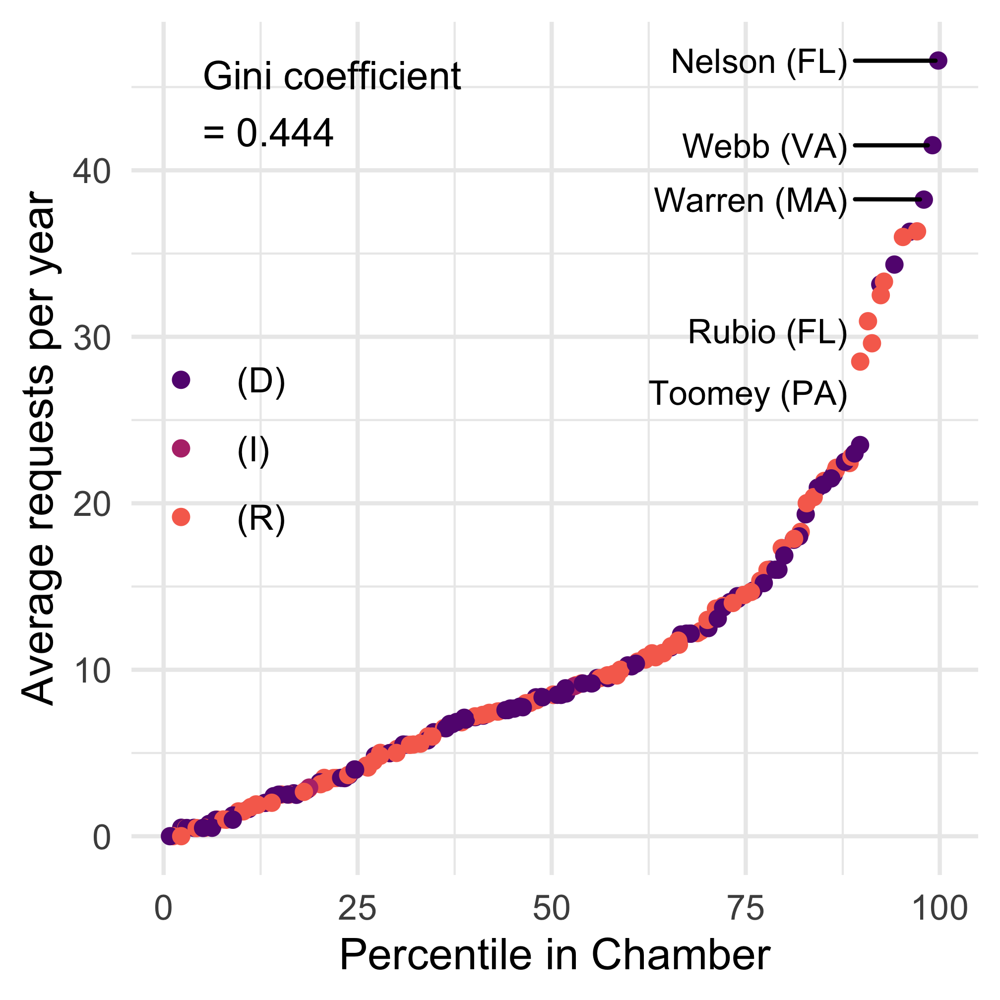
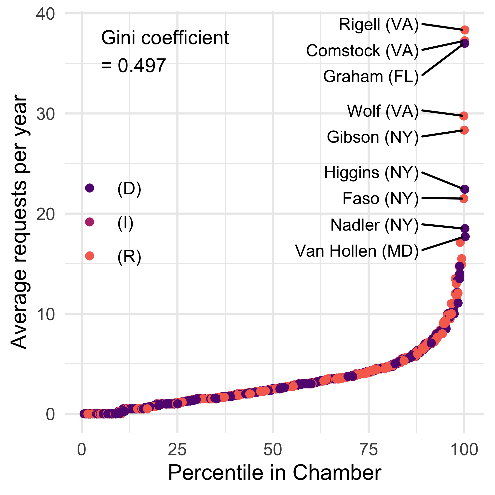
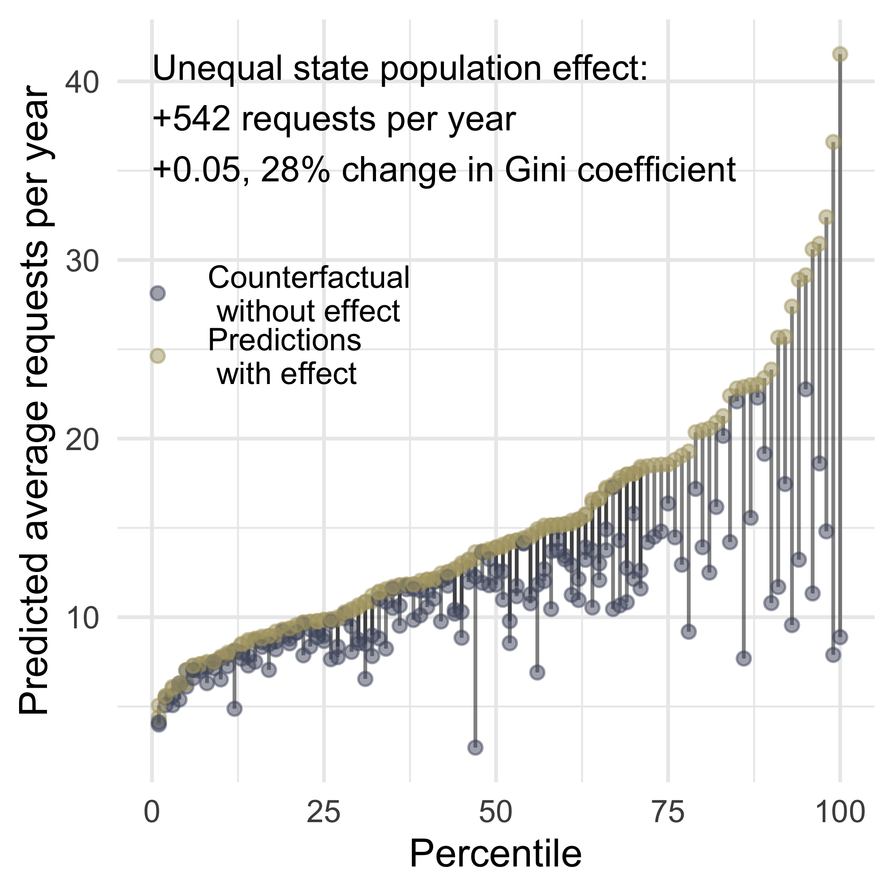
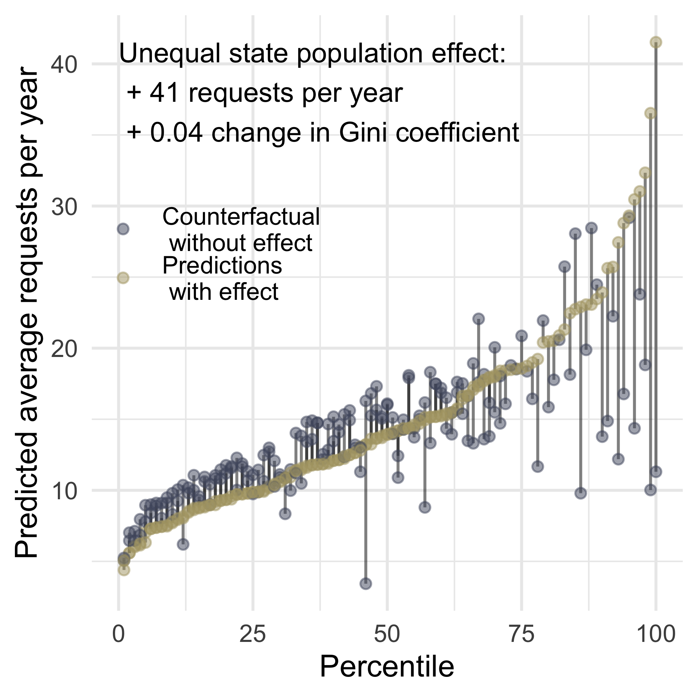
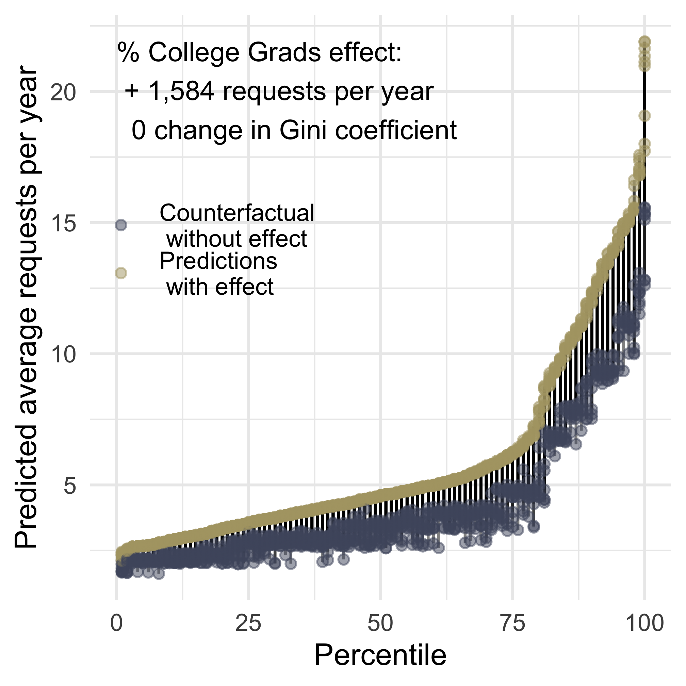
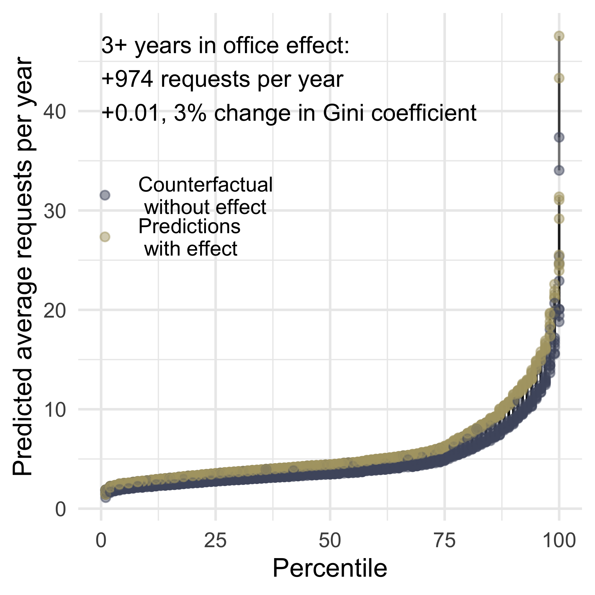
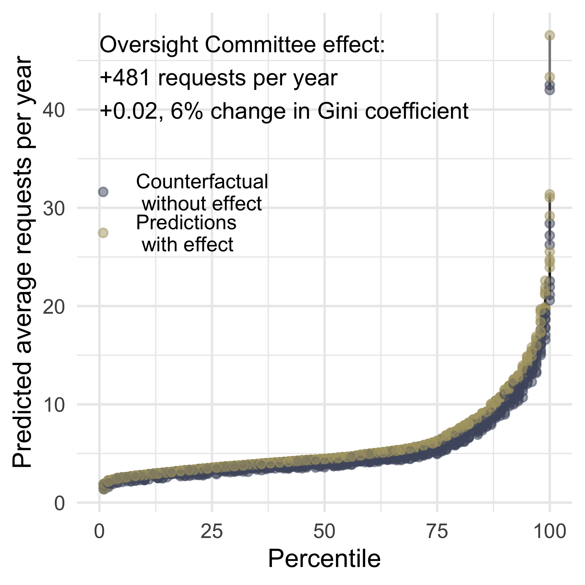
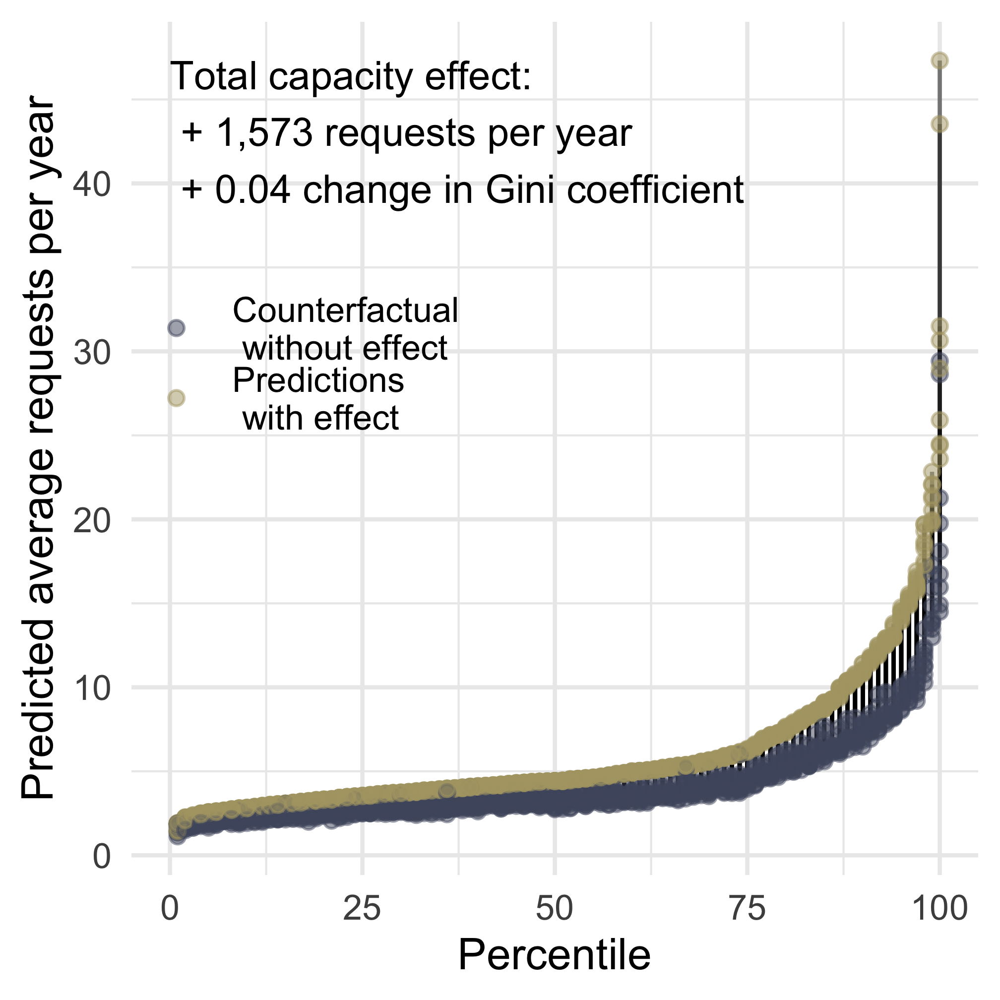
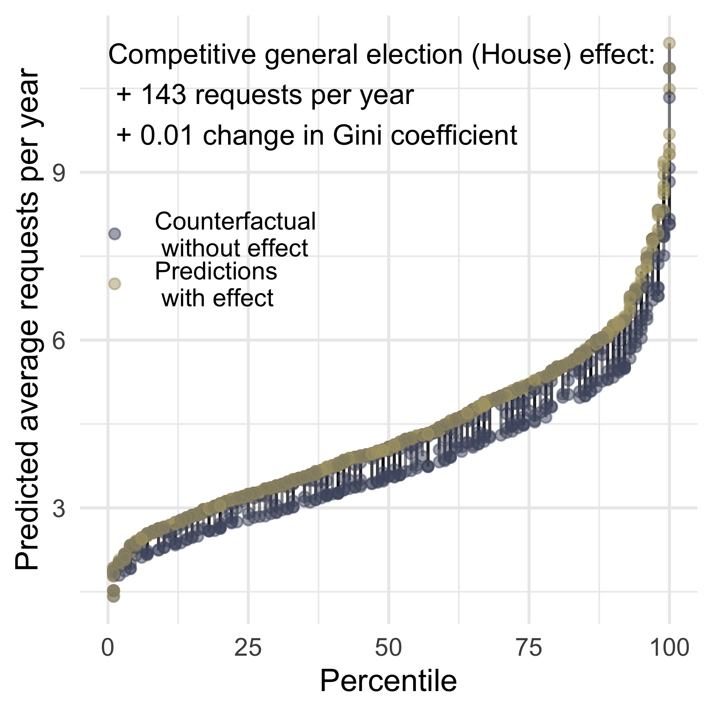

6 Representing Businesses
ABSTRACT: What explains unequal levels of constituency service on behalf of businesses? We find that selective elements of all parts of our Demand, Capacity, and Strategic Choice framework are related to the provision of corporate service. For Demand, we find that having more constituents and more demanding constituents are correlated with greater provision of corporate service. For Capacity, we find that legislator experience is always correlated with greater provision of corporate service, and that reporting committee assignments and committee leadership positions are sometimes correlated with greater provision of corporate service. For Strategic Responses to the Political Environment, we find that in accordance with their pro-business ideological beliefs, Republicans consistently do more corporate service. We also find that ideologically extreme legislators consistently do less corporate service, and members of the president’s party who are more ideologically distant do more corporate service. We observe House Members who are electorally vulnerable doing more corporate service; these findings are limited to the cross-sectional models. Lastly, we find that corporate campaign contributions are correlated with greater corporate service in cross-sectional, but not within-legislator models. This pattern regarding corporate campaign contributions holds at both the aggregate level, looking at all corporate contributions and all corporate service, as well as within an Energy Sector case study.
6.1 What is commercial constituency service?
Constituency service on behalf of businesses, or commercial service, is a form of constituency service where the legislator is advocating on behalf of a business — including business owners like farmers. This work on behalf of individual businesses (or business owners) is often on behalf of businesses in the legislators’ districts, but it is not necessarily geographically delimited. For example, legislators could be advocating on behalf of out-of-district campaign donors.
These commercial constituency service requests span a range of issues and agencies. A common form of request is asking an agency to expedite something–in essence, to speed up whatever it is they are doing. For example, Figure 6.1 below shows a letter Rep. Mac Thornberry (R-TX13) wrote to the Federal Energy Regulatory Commission (FERC) in 2013 on behalf of the Vice President of the Panhandle Producers and Royalty Owners Association and the President of Cambridge Production, Inc. In the letter, Rep. Thornberry is urging FERC to speed up its decision-making process, and he includes letters from the named corporate leaders explaining their request.
In addition to contracts and permits, the federal government distributes grants to businesses. For example the Department of Commerce, National Institute of Standards and Technology Advanced Technology Program distributes grants to stimulate early-stage technology development that would otherwise not be funded. In 2007, Joe Biden wrote to NIST “to extend support for Athena Biotechnologies Inc.’s application in the amount of $2 million to the Advanced Technologies Program grant through NIST” and Jack Kingston, wrote “in support of the application submitted by American Process, Inc. and the Georgia Institute of Technology.” Both of these were assigned NIST’s highest priority level in their correspondence tracking system.
Members of Congress make thousands of such interventions every year. To the Small Business Administration alone, legislators sent thousands of letters helping businesses gain access to capital, government contracts, loans, and disaster loan forgiveness. Given incentives on the part of companies, members of Congress, and agencies to keep such interventions out of the public eye, the records we obtained are a rare glimpse into legislator advocacy on behalf of business interests.
While it is impossible to obtain systematic data historically, scattered archival records indicate that Members of Congress advocating on behalf of business interests to federal agencies is not an entirely new phenomenon. In 1966, Senator Strom Thurmond sent a Western Union telegram to Lee White, Chair of the Federal Power Commission, requesting expeditious processing of Duke Power Company’s recent license application (Figure 6.2). This outreach took place before the passage of the Federal Election Campaign Act of 1971 and the advent of the modern campaign finance disclosure system, so there is no way to know whether Duke Energy was a campaign contributor to Senator Thurmond shortly before or in the years immediately following the outreach. Decades later, campaign finance disclosure records indicate that the long-serving Senator Thurmond received campaign contributions from Duke Energy1.
In this chapter, we establish what constituency service on behalf of corporations looks like, document the inequality in corporate constituency service, and examine what explains corporate constituency service.
6.2 What does constituency service on behalf of corporations look like?
Figure 6.3 below shows the most frequent words used in corporate constituency service messages from legislators to federal agencies over time.2 These word clouds reveal some of the types of assistance consistently sought through the prevalence of terms like pending, assistance, contracting, application, funding, and project. They also show issues that suddenly become salient, like COVID and coronavirus appearing in the years following the outbreak of the coronavirus pandemic in 2020.

Given that its mission is to support small businesses in the United States, the Small Business Administration is a locus of communications from members of Congress on behalf of businesses. Many of these involved requests for disaster assistance, as well as assistance with accessing capital and obtaining loans. Legislators also wrote on behalf of constituents seeking assistance with the 8(a) Business Development Program, which provides support to business owners who are presumed to be socially disadvantaged, including Black Americans, Hispanic Americans, Native Americans, and Asian Americans. Requests on behalf of small businesses appeared in many other agencies as well, including requests on behalf of Service-Disabled Veteran-Owned Small Businesses in several subagencies in the Department of Labor.
Many legislators wrote on behalf of businesses that needed assistance with work visas and other documentation for foreign workers. These communications appeared in a number of different agencies, including the U.S. Citizenship and Immigration Services (USCIS) and several sub-agencies in the Department of Labor like the Employment and Training Administration (ETA) and the Office of the Solicitor.3 Some of the legislators we find doing the most work helping businesses with work visas for their employees might run contrary to our stereotypes of corporate advocacy. For example, the list of legislators who wrote the most letters on behalf of business interests to USCIS in 2016 includes prominent progressive Democrats like Senator Elizabeth Warren (D-MA, 249 letters) and Rep. Jerry Nadler (D-NY, 211 letters), as well as, Rep. Brian Higgins (D-NY, 249 letters), Sen. Chuck Schumer (D-NY, 220 letters), Rep. Scott Rigell (R-VA, 215 letters), Sen. Kirsten Gillibrand (D-NY, 151 letters), Sen. Amy Klobuchar (D-NY, 146 letters), and Sen. Johnny Isakson (R-GA, 125 letters).4
If we look at legislators who wrote the most corporate service letters to a single agency in a given year excluding USCIS, we see a less surprising list of names: Sen. David Vitter (R-LA, 64 letters in 2015 to SBA), Sen. Mark Warner (D-VA, 56 letters in 2014 to CMS), Sen. Richard Lugar (R-IN, 49 letters in 2009 to CMS), Rep. Eric Cantor (R-VA, 33 letters in 2011 to CMS), Sen. Marco Rubio (R-FL, 32 letters in 2016 to CMS), Rep. Brad Sherman (D-CA, 31 letters in 2012 to CMS), and Sen. Jim Webb (D-VA, 28 letters in 2007 to DOL-ETA).5
As with individual constituency service, there are examples of business-focused constituency service that are less obvious or focus less on bureaucratic problems and government benefits. For example, Senator Richard Lugar wrote to the Food and Drug Administration (FDA) on behalf of a constituent who owned a produce company and was concerned about how the classification of watermelons in a high-risk food safety category would affect the productivity of his business, given the extra (and in his view, unnecessary) precautions that the company would have to take. Although the business owner was technically expressing an opinion about FDA policy in this communication with Lugar, the issue at hand had a clear and tangible impact upon his business operations, and the constituent presumably wanted the FDA to reconsider the policy to mitigate these effects.
As another example, Representative Eddie Bernice Johnson wrote to the IRS on behalf of a constituent who had submitted an application to the IRS with an error that needed to be corrected (the constituent mistakenly wrote his PIN instead of his PTIN number on the form). The constituent had contacted Johnson’s office because the paperwork had still not been processed after he re-submitted a version with the correction, and he was concerned about “losing money in lost potential business.” Both of these contacts show that legislators’ advocacy on behalf of businesses is not necessarily about fixing bureaucratic problems or obtaining special treatment for businesses at the expense of the public good.
In some cases, legislators wrote on behalf of businesses seeking enforcement actions against their competitors. For example, Rep. Frank Kratovil (D-MD1) wrote to the FDA, “Red Bull that is made for Ireland is being mysteriously distributed in Maryland without an FDA approval noted on the package. Constituent, who is a distributor for Red Bull in Maryland, questions whether this practice is legal,” (April 22, 2009). Technically, Kratovil’s letter merely sought information about what was happening, but he made the implications of potentially illegal activity for his constituent’s business interests very clear.
Lastly, a more traditional example of corporate constituency service is a legislator writing to an agency seeking to change policy to benefit his business. Rep. Ed Whitfield (R-KY) wrote to the FDA on behalf of a constituent who owns a tobacco outlet and “wants FDA to modify the Tobacco Control and Prevention Act to allow individuals under the age of eighteen to enter stores with self-service displays provided an adult accompanies them. The company owner does not want to make his store adult-only, and believes the FDA’s regulation will prevent families from entering the store, and will threaten the sale of other non-tobacco items.” Once again, we see a clear articulation of a business interest by the constituent, as well as a clear request to modify legislation to suit the constituent’s business interests. Rather than making such requests on behalf of a large corporation, however, Whitfield made this request on behalf of a small business owner.
6.3 Inequality in Corporate Constituency Service
Inequality in interbranch representation on behalf of businesses mirrors 2024 levels of income inequality in Brazil (.5) and Turkey (.44) for the House and the Senate, respectively. Figure 6.4 below shows the inequality in corporate constituency work across legislators. These patterns again reveal high levels of inequality, larger than the inequality in overall interbranch representation. Interestingly, the top of both lists contains many of the same offices — those of Senators Nelson, Webb, Warren, Rubio, and Toomey were also in the top 10 offices in providing individual constituency service. Likewise, in the House, the offices of Representatives Comstock, Wolf, Van Hollen, Graham, and Faso were also in the top 10% of offices providing individual constituency service in the House.


6.4 What Explains Differences in Representing Businesses?
Table 6.1 below shows the full regression results across cross-section and difference-in-differences model specifications explaining corporate service. We find Demand, Capacity, and Strategic Choices all play a role in explaining variation in corporate service.
| (1) | (2) | (3) | (4) | (5) | (6) | |
|---|---|---|---|---|---|---|
| † p < 0.1, * p < 0.05, ** p < 0.01 | ||||||
| Robust standard errors in parentheses, clustered by legislator. | ||||||
| This table shows estimates of the effect of constituent demand (population, employment, education, public assistance), legislative office capacity (chamber, reporting committee, committee chair, subcommittee chair, and ranking member positions, years in office, and reporting committee membership) and strategic choices in a given political environment (perceived ideological distance from the agency, co-partisan president) on levels of interbranch representation. | ||||||
| Dependent variable | Count | Count | Count | Count | Count | Count |
| Demand | Demand | Demand | Demand | Demand | Demand | Demand |
| Population (Millions) | 0.042** | 0.019 | 0.947* | 0.041** | 0.084 | |
| (0.009) | (0.025) | (0.404) | (0.008) | (0.099) | ||
| % Government Sector | 2.730** | 2.188 | 3.402** | 2.647 | 0.355 | 8.199 |
| (0.641) | (1.561) | (0.662) | (1.665) | (1.689) | (13.271) | |
| % College Grad | 1.405** | 0.619 | 1.179** | 0.732 | 2.899** | 3.966 |
| (0.304) | (0.445) | (0.315) | (0.471) | (1.003) | (7.909) | |
| % Public Assistance | 2.847* | -3.218 | 1.296 | -3.055 | 13.800** | -0.942 |
| (1.439) | (2.643) | (1.503) | (2.976) | (4.006) | (9.298) | |
| Strategic Choice | Strategic Choice | Strategic Choice | Strategic Choice | Strategic Choice | Strategic Choice | Strategic Choice |
| Competitive General | 0.110* | -0.019 | 0.144** | -0.010 | 0.062 | -0.103 |
| (0.043) | (0.041) | (0.050) | (0.057) | (0.073) | (0.077) | |
| Competitive Primary | 0.009 | 0.124 | ||||
| (0.075) | (0.088) | |||||
| President's Party | -0.091† | 0.048† | -0.104† | 0.010 | -0.071 | 0.070 |
| (0.047) | (0.026) | (0.062) | (0.035) | (0.078) | (0.043) | |
| Republican | 0.314** | 0.301** | 0.279** | |||
| (0.052) | (0.058) | (0.092) | ||||
| Independent | -0.118 | -0.296 | ||||
| (0.289) | (0.295) | |||||
| Ideological Distance | -0.072 | -0.076 | -0.099 | |||
| (0.045) | (0.053) | (0.085) | ||||
| Distance x President's Party | 0.164** | 0.144* | 0.205* | |||
| (0.054) | (0.068) | (0.095) | ||||
| | 1st Dim. DW-NOMINATE | | -0.804** | -0.556** | -1.092** | |||
| (0.164) | (0.172) | (0.321) | ||||
| Capacity | Capacity | Capacity | Capacity | Capacity | Capacity | Capacity |
| Reporting Committee | 0.280** | 0.033 | 0.335** | 0.155 | 0.193** | -0.124 |
| (0.039) | (0.070) | (0.047) | (0.109) | (0.068) | (0.091) | |
| Three+ Years in Office | 0.238** | 0.261** | 0.233** | 0.269** | 0.338* | 0.263* |
| (0.047) | (0.050) | (0.055) | (0.069) | (0.149) | (0.133) | |
| Committee Chair | 0.076 | 0.095† | 0.090 | 0.056 | 0.028 | 0.146† |
| (0.052) | (0.055) | (0.066) | (0.090) | (0.085) | (0.078) | |
| Ranking Member | 0.175** | 0.085† | 0.108 | 0.055 | 0.181* | 0.133† |
| (0.063) | (0.052) | (0.095) | (0.086) | (0.086) | (0.074) | |
| Subcommittee Chair | 0.100** | 0.057 | 0.059 | 0.015 | 0.102 | 0.090 |
| (0.036) | (0.035) | (0.041) | (0.045) | (0.070) | (0.064) | |
| Served in State Leg. | -0.011 | -0.062 | 0.098 | |||
| (0.043) | (0.047) | (0.087) | ||||
| Senate | 0.750** | 0.984** | ||||
| (0.072) | (0.201) | |||||
| Observations | 251,847 | 66,009 | 177,046 | 42,801 | 40,661 | 17,884 |
| Year x agency fixed effects | X | X | X | X | X | X |
| Legislator x agency fixed effects | X | X | X | |||
| All legislators | X | X | ||||
| Only House | X | X | ||||
| Only Senate | X | X | ||||
Demand
We find evidence in Table 6.1 consistent with both Hypothesis 2.1 and Hypothesis 2.2 across all cross-sectional model specifications (models 1, 3, 5).6 Having more constituents, and more demanding constituents (college graduates in all cross-sectional specifications, and government workers in two of the three cross-sectional specifications) are positively associated with more corporate service. Findings are, perhaps not surprisingly, more mixed for a relationship between greater needs constituents (the percentage of the district on public assistance) and corporate service work, with varying signs and significance across model specifications. Our greater needs hypothesis (Hypothesis 2.3) theorized a relationship between greater needs constituents and individual constituent service and non-profit constituency service, but not with corporate service.
Using the coefficients from model 5 in Table 6.1, Figure 6.5 shows the predicted average levels of interbranch representation per year per senator compared to a counterfactual scenario where all states had the same population (and staff budget corresponding to that population). The panel on the left shows a counterfactual in which all Senators had the same population as Wyoming. The yellow dots represent every Senator’s actual provision of constituency service, organized left to right from lowest providers to highest providers. The blue dots show the counterfactual prediction of population being equalized to the state of Wyoming. Since Wyoming is currently the least populous state (according to the 2020 Census, the population was approximately 577 thousand people), this would be a scenario that reduces demand in every state–high population states observe large estimated effects, while states with more modest populations experience smaller estimated effects.


The panel on the right (in Figure 6.5) shows a counterfactual in which all Senators have the same population as Tennessee–the 15th most populous state (according to the 2020 Census, the population was approximately 6.9 million). This counterfactual simulates an increase in demand (and Senators’ resources) for most states, while substantially decreasing population (and Senators’ resources) for the most populous states like California, Texas, and New York. The yellow dots representing each Senator’s actual performance are identical across plots. In the plot on the right, we see that some senators from smaller states would do more interbranch representation on behalf of businesses under this counterfactual.
While population in the form of demand is highly correlated with corporate service – having more constituents is associated with substantially more constituency service – it has relatively little impact on inequality. In a counterfactual world in which states had the same population (not too dissimilar from the U.S. House), there would be a limited impact on reducing inequality in interbranch corporate service, because the impacts are spread across the distribution. The Gini coefficient is estimated to change by 0.04 points, which suggests that the variation in corporate service associated with state population is responsible for approximately 5% of the overall inequality in corporate service.
Figure 6.6 shows a similar style of counterfactual for our Hypothesis 2.1. In this case, we are comparing predicted levels of interbranch representation per Senator based on the actual education levels of their constituents (yellow dots) to a counterfactual in which no constituents had a college degree (blue dots). Reducing the number of more demanding constituents in a district would be associated with a reduction in corporate service. If we sum up the predicted corporate service differences between the no education counterfactual and the actual district education across all legislators, the effect of the proportion of college-educated constituents is estimated to be an average of 1,584 corporate service requests per year. Although increasing or decreasing a district’s education level is estimated to change the amount of corporate service, equalizing education levels across districts is estimated to have no change in the inequality across districts (Gini coefficient).

Capacity
Turning from Demand to Capacity, we find evidence in Table 6.1 of some forms of capacity always having strong positive relationships (legislator experience in Congress) across all model specifications. In contrast, other forms of capacity (reporting committee assignment and committee leadership positions) are positive and significant in some models. Lastly, prior state legislative experience is insignificant across all model specifications.
Figure 6.7 below shows a similar style of counterfactual scenarios estimating the impact of capacity changes on the performance of corporate constituency service. The top left panel shows the effect of legislator experience, the top right shows a Reporting Committee Relationship (sitting on the committee that has jurisdiction over that agency), and the bottom left panel shows a Total Capacity counterfactual effect.7
Consistent with our Hypothesis 2.5 and previous findings by Judge-Lord et al. (2026) and others, we see capacity in the form of legislator experience playing an important role in the provision of corporate constituency service.



Perhaps most intriguing is that the Reporting Committee capacity measure is only significant in cross-sectional models, not in difference-in-difference models, suggesting that Reporting Committee may be capturing something important about the capacity of specific members who serve on those committees.
Capacity: Staff with District Experience for New Members
In the preceding section, we found that capacity in the form of legislator experience has one of the strongest relationships with corporate service. This finding is consistent with Judge-Lord et al. (2026), which found a substantial drop-off in district service when a new member replaces an incumbent. Now we want to consider whether it is possible for staff experienced with the district to mitigate this loss–essentially staff with experience working in Congress on behalf of this district as a form of capacity for new members. As a rough proxy for detailed staff retention data, we look at whether a new member is from the same party as the previous incumbent. In many cases, it is plausible that new members of the same party retain some staff members, while it is implausible that new members of the opposite party will retain many staff members.
Table 6.2 shows the effect of staff with congressional district representation experience on the provision of corporate constituency service. While new members have a negative impact on corporate service in all specifications (statistically significant in all but one), we do not observe the interaction of new members with the same party as having a mitigating effect.
| (1) | (2) | (3) | (4) | (5) | (6) | |
|---|---|---|---|---|---|---|
| † p < 0.1, * p < 0.05, ** p < 0.01 | ||||||
| Robust standard errors in parentheses, clustered by district | ||||||
| This table shows estimates of the effect of electing a new member of the same or different party on levels of interbranch representation. | ||||||
| Dependent variable | Count | Count | Count | Count | Count | Count |
| New Member | -0.146** | -0.193** | -0.165** | -0.132† | -0.543** | -0.105 |
| (0.042) | (0.033) | (0.062) | (0.068) | (0.117) | (0.067) | |
| New Member x Same Party | 0.041 | -0.082 | 0.069 | -0.153† | ||
| (0.093) | (0.091) | (0.159) | (0.091) | |||
| Same Party | -0.159* | 0.057 | -0.272* | 0.083 | ||
| (0.078) | (0.070) | (0.128) | (0.085) | |||
| Competitive General | 0.519** | -0.055 | ||||
| (0.130) | (0.047) | |||||
| President's Party | 0.011 | -0.120† | ||||
| (0.089) | (0.067) | |||||
| Republican | 0.178 | 0.048 | ||||
| (0.136) | (0.084) | |||||
| Independent | 0.448* | 0.178 | ||||
| (0.202) | (0.143) | |||||
| Ideological Distance | -0.066 | -0.139* | ||||
| (0.072) | (0.059) | |||||
| Distance x President's Party | 0.010 | 0.095 | ||||
| (0.070) | (0.067) | |||||
| | 1st Dim. DW-NOMINATE | | -0.949* | -0.431† | ||||
| (0.449) | (0.256) | |||||
| Senate | 1.851** | 1.845** | ||||
| (0.078) | (0.115) | |||||
| Observations | 258,027 | 257,989 | 92,119 | 91,080 | 90,810 | 89,775 |
| Year x agency fixed effects | X | X | X | X | X | X |
| District fixed effects | X | X | X | |||
We want to be cautious about drawing firm inferences regarding the evidence failing to support the potential for experienced congressional staff to mitigate the drop in representation associated with being represented by a new Member of Congress. Further research is needed using a more precise measure of staff experienced to evaluate this claim.
Taking a step back, we have found that capacity in the form of legislator experience and serving on a committee with a reporting relationship (oversight) of an agency are associated with greater provision of corporate service.
Strategic Responses to the Political Environment
Lastly, we turn to evaluating the relationship between corporate service and the final part of our framework: the strategic choices legislators make in response to the political environment. If we look back at the strategic choice section of our main corporate service regression table Table 6.1, we see some consistent patterns across model specifications. Consistent with their pro-business ideological beliefs, Republicans consistently do more corporate service. We also find that ideologically extreme legislators consistently do less corporate service, and members of the president’s party who are more ideologically distant do more corporate service.8 Finally, we observe House Members who are electorally vulnerable doing more corporate service, though these findings are limited to the cross-sectional models. In the following sections, we explore these results in greater detail.
Corporate Service as Electoral Strategy
Drawing on across-legislator differences in the cross-sectional model (with just the year-agency fixed effects), we find that electorally vulnerable House members do more corporate service (statistically significant in the House only, and the pooled model with all legislators) Table 6.1. This is consistent with our expectations in the Hypothesis 2.9, though we note that we fail to find any effects for competitive primaries or in the fixed effects models. Figure 6.8 shows a counterfactual that compares actual electoral competitiveness to a no-competition scenario in the general election.

Strategic Choice: Staff allocation reflects priorities
Next, we examine our staff allocation hypothesis that staff allocations reflect a legislator’s priorities. Our hypothesis posits that the more staff an office allocates to a given type of work, the more work it produces. It is, however, an open question whether allocating staff to constituency service generally would necessarily increase the sub-type of corporate service. Table 6.3 shows the effects of staff budget allocations on corporate service requests to federal agencies. We find no relationship between any form of staff spending and corporate service.
| (1) | (2) | (3) | (4) | |
|---|---|---|---|---|
| † p < 0.1, * p < 0.05, ** p < 0.01 | ||||
| Robust standard errors in parentheses, clustered by legislator. | ||||
| This table shows estimates of the effect of legislator staff spending. | ||||
| Dependent variable | Count | Count | Count | Count |
| Legislative Spending | 0.117 | 0.376 | -0.008 | 0.190 |
| (0.276) | (0.277) | (0.275) | (0.284) | |
| Comms. Spending | -0.881 | 0.807 | -1.019 | 0.755 |
| (0.763) | (0.712) | (0.739) | (0.702) | |
| Const. Spending | 0.339 | 0.426 | 0.170 | 0.341 |
| (0.226) | (0.288) | (0.227) | (0.286) | |
| Majority | -0.062 | -0.004 | ||
| (0.064) | (0.066) | |||
| President's Party | -0.178** | -0.022 | ||
| (0.052) | (0.051) | |||
| Reporting Committee | 0.362** | 0.034 | ||
| (0.057) | (0.135) | |||
| Three+ Years in Office | 0.202** | 0.214* | ||
| (0.062) | (0.084) | |||
| Committee Chair | 0.045 | -0.075 | ||
| (0.088) | (0.137) | |||
| Ranking Member | 0.178 | 0.089 | ||
| (0.115) | (0.115) | |||
| Prestige Committee | 0.027 | -0.052 | ||
| (0.065) | (0.086) | |||
| Subcommittee Chair | 0.040 | -0.045 | ||
| (0.074) | (0.075) | |||
| Served in State Leg. | -0.096 | -6.107 | ||
| (0.063) | (172940.392) | |||
| Observations | 122,297 | 24,520 | 121,863 | 24,442 |
| Year x agency fixed effects | X | X | X | X |
| Legislator x agency fixed effects | X | X | ||
| House Only | X | X | X | X |
Strategic: PAC Fundraising and Corporate Service
Finally, we examine our Strategic Choice of Advocating for Corporate Donors, in which we hypothesize that legislators who engage in more corporate fundraising will be associated with higher levels of corporate constituency service Hypothesis 2.15. Table 6.4 below examines the relationship between corporate PAC contributions and engaging in corporate constituency service. We find support for a statistically significant relationship between corporate fundraising and corporate service, but only in the cross-sectional models. Once legislator-agency fixed effects are included, the effect disappears entirely. This pattern is suggestive of the idea that donors are giving to pro-corporate legislators, rather than contributions changing behavior.
| (1) | (2) | (3) | (4) | |
|---|---|---|---|---|
| † p < 0.1, * p < 0.05, ** p < 0.01 | ||||
| Robust standard errors in parentheses, clustered by district | ||||
| This table shows estimates of the relationship between corporate Political Action Committee donations and levels of interbranch representation. | ||||
| Dependent variable | Count | Count | Count | Count |
| Corporate Campaign $ (Millions) | 0.019** | 0.001 | 0.018** | 0.000 |
| (0.005) | (0.003) | (0.005) | (0.003) | |
| Majority | 0.046 | 0.020 | 0.102** | 0.030 |
| (0.032) | (0.030) | (0.038) | (0.034) | |
| President's Party | -0.088† | 0.066* | -0.092† | 0.057* |
| (0.048) | (0.027) | (0.048) | (0.027) | |
| Republican | 0.261** | 0.234** | ||
| (0.053) | (0.053) | |||
| Independent | -0.457* | -0.460 | ||
| (0.217) | (0.301) | |||
| Ideological Distance | -0.081† | -0.067 | ||
| (0.047) | (0.047) | |||
| Distance x President's Party | 0.152** | 0.150** | ||
| (0.056) | (0.056) | |||
| | 1st Dim. DW-NOMINATE | | -0.883** | -0.848** | ||
| (0.168) | (0.167) | |||
| Reporting Committee | 0.277** | 0.030 | ||
| (0.040) | (0.069) | |||
| Three+ Years in Office | 0.281** | 0.287** | ||
| (0.049) | (0.051) | |||
| Committee Chair | 0.032 | 0.070 | ||
| (0.059) | (0.057) | |||
| Ranking Member | 0.187** | 0.076 | ||
| (0.070) | (0.054) | |||
| Prestige Committee | -0.029 | -0.068 | ||
| (0.046) | (0.050) | |||
| Senate | 1.133** | 1.051** | 1.071** | 1.070** |
| (0.058) | (0.115) | (0.064) | (0.115) | |
| Observations | 254,992 | 65,459 | 252,589 | 65,033 |
| Year x agency fixed effects | X | X | X | X |
| Legislator x agency fixed effects | X | X | ||
Case Study: Energy PAC Campaign Contributions and Corporate Constituency Service to the Department of Energy
Up to this point in the chapter, we have examined the relationship between our framework of demand, capacity, and strategic choice and corporate constituency service work with all federal agencies. Before concluding the chapter and moving on to the next form of interbranch representation, we present a case study of corporate constituency service directed toward the Department of Energy. By focusing on work with a single agency, we can look more specifically at campaign contributions the legislator received from the energy sector political action committees (as opposed to the total corporate PAC contributions we examined in the previous section and models). Table 6.5 uses a similar model specification as Table 6.4, but changes the dependent variable to corporate constituency service to the Department of Energy.
| (1) | (2) | (3) | (4) | |
|---|---|---|---|---|
| † p < 0.1, * p < 0.05, ** p < 0.01 | ||||
| Robust standard errors in parentheses, clustered by district | ||||
| This table shows estimates of the relationship between corporate Political Action Committee donations and levels of interbranch representation. | ||||
| Dependent variable | Count | Count | Count | Count |
| Energy Corp. Campaign $ (Millions) | 1.833** | 0.716 | 1.685** | 0.582 |
| (0.629) | (0.670) | (0.640) | (0.699) | |
| Non-energy Corp. Campaign $ (Millions) | -0.002 | 0.006 | -0.001 | 0.003 |
| (0.012) | (0.009) | (0.012) | (0.010) | |
| Majority | 0.047 | -0.058 | -0.029 | -0.251* |
| (0.100) | (0.106) | (0.109) | (0.120) | |
| President's Party | -0.328 | -0.141† | -0.334 | -0.140† |
| (0.447) | (0.076) | (0.452) | (0.077) | |
| Republican | 0.362 | 0.396 | ||
| (0.249) | (0.254) | |||
| Independent | 0.430† | 0.609* | ||
| (0.261) | (0.241) | |||
| Ideological Distance | -0.191 | -0.229 | ||
| (0.380) | (0.387) | |||
| Distance x President's Party | 0.165 | 0.167 | ||
| (0.471) | (0.476) | |||
| | 1st Dim. DW-NOMINATE | | -0.314 | -0.282 | ||
| (0.307) | (0.317) | |||
| Reporting Committee | 0.152 | 0.113 | ||
| (0.094) | (0.151) | |||
| Three+ Years in Office | -0.139 | 0.014 | ||
| (0.125) | (0.164) | |||
| Committee Chair | -0.060 | 0.156 | ||
| (0.120) | (0.147) | |||
| Ranking Member | -0.393* | -0.586** | ||
| (0.171) | (0.176) | |||
| Prestige Committee | 0.097 | -0.049 | ||
| (0.098) | (0.154) | |||
| Senate | 1.057** | 0.932** | 1.043** | 0.878** |
| (0.092) | (0.268) | (0.101) | (0.263) | |
| Observations | 10,904 | 5,839 | 10,800 | 5,791 |
| Year x agency fixed effects | X | X | X | X |
| Legislator x agency fixed effects | X | X | ||
| Dept. Of Energy Only | X | X | X | X |
Just as with the aggregate data across all agencies (Table 6.4), we find that prior contributions from the energy sector are positively correlated with corporate service in the cross-sectional models, but not in the difference-in-difference models. This pattern of contributions mattering in cross-sectional models but not differences in difference models would be consistent with a story of corporate donors giving to like-minded members, rather than contributions changing behavior. Other interpretations, of course, are possible given ambiguities of temporal sequencing and the limitations of what we can say with this research design.
6.5 Conclusion: Legislator Advocacy on Behalf of Corporations
Overall, we find that selective elements of all parts of our Demand, Capacity, and Strategic Choice framework are related to the provision of corporate service. For Demand, we find that having more constituents and more demanding constituents are correlated with greater provision of corporate service. For Capacity, we find that legislator experience is always correlated with greater provision of corporate service, and that reporting committee assignments and committee leadership positions are sometimes correlated with greater provision of corporate service.
For Strategic Responses to the Political Environment, we find that consistent with their pro-business ideological beliefs, Republicans consistently do more corporate service. We also find that ideologically extreme legislators consistently do less corporate service, and members of the president’s party who are more ideologically distant do more corporate service. We observe House Members who are electorally vulnerable doing more corporate service, though these findings are limited to the cross-sectional models. Lastly, we find that corporate campaign contributions are correlated with greater corporate service in cross-sectional, but not within-legislator models. This pattern regarding corporate campaign contributions holds at both the aggregate level, looking at all corporate contributions and all corporate service, as well as within an Energy Sector case study.
Duke Energy gave Thurmond $6,000 in 1998 and in 2000.↩︎
In some cases these words are taken from the actual letters themselves, but more often they come from a summary in a log file the agency kept of contact with Members of Congress.↩︎
Other requests on behalf of businesses that legislators sent to DOL agencies involved disputes over fines that businesses received and help with Trade Adjustment Assistance (TAA) benefits for displaced workers.↩︎
A word of caution about drawing inferences from this 2016 case. We chose 2016 to use for this example because it was one of the few years for which we have data from USCIS. We urge readers to remember that these letters during 2016 were written prior to President Trump’s inauguration (January 2017), and thus were not in response to Trump-initiated immigration policy changes.↩︎
As previously mentioned, SBA is the Small Business Administration–a common and natural place for corporate service; CMS is the Centers for Medicare and Medicaid Services–a plausible place after the passage of the Affordable Care Act; and the DOL-ETA is the Department of Labor’s Employment and Training Administration.↩︎
In evaluating our demand hypotheses, we focus on the cross-sectional results because the difference-in-difference model specifications that include both legislator-agency fixed effects and year-agency fixed effects effectively control for district demand characteristics, and thus it is largely consistent with expectations that the limited temporal variation in these variables hold little explanatory power.↩︎
Total capacity effect includes counterfactuals for chair, sub-committee chair, ranking minority member, oversight, prestige committee assignment, and legislator experience.↩︎
An examination of the regression models in Table 6.1 shows that some variables that do not vary within members are absent from the models with legislator-agency fixed effects.↩︎